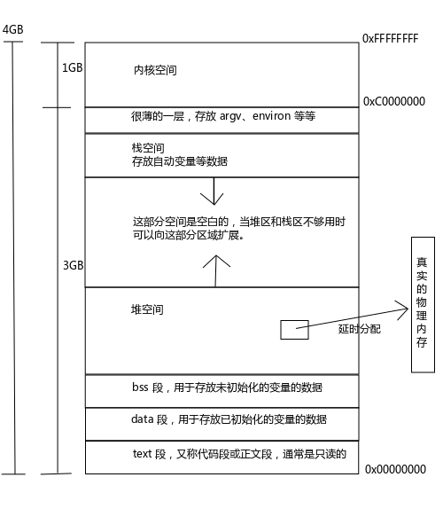
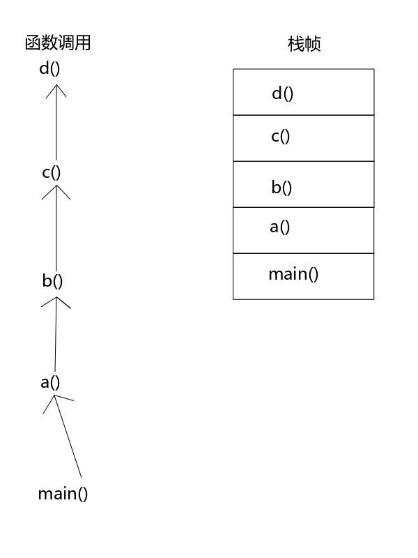

进程环境
本章前半部分讨论进程的开始和结束，后半部分讨论参数列表、环境变量、C 程序虚拟地址空间布局等内容。
- main函数
- 进程的终止
- 命令行参数的分析
- 环境变量
- C程序的存储空间布局
- 库
- 函数跳转
- 资源的获取及控制
1. main() 函数
1 | int main (int argc, char *argv[]); |
其实最早的 main 函数是三个参数的，除了 argc 和 argv 以外，还有一个环境变量。后来发现环境变量越来越好用，所以就独立出来成了单独的功能。
2. 进程终止
Linux 系统一共有 8 种进程终止方式.1-5为正常终止方式, 6-8为异常终止方式（必知必会）
- 从 main() 函数返回；
- 调用 exit(3) 函数；
- 调用 _exit(2) 或 _Exit(2) 函数；
- 最后一个线程从其启动例程返回；
- 从最后一个线程调用 pthread_exit(3) 函数；
- 调用 abort(3) 函数；
- 接收到一个信号并终止；（ctrl+c）
- 最后一个线程对取消请求作出响应；
第 1 条：在 main() 函数中执行 return 语句，可以将一个 int 值作为程序的返回值返回给调用者，一般是 shell。返回 0 表示程序正常结束，返回 非零值 表示程序异常结束。
1 | int main() |
1 | echo $? # 打印上一条语句的执行状态 |
第 2 条：在 main() 函数中执行 return 语句相当于调用 exit(3) 函数，exit(3) 是专门用于结束进程的，它依赖于 _exit(2) 或 _Exit(2) 系统调用。程序中任何地方调用 exit(3) 都会退出，但 return 语句只有在 main() 函数中才能结束进程，在其它函数中执行 return 语句只能退出当前函数。exit 能返回的值在-128 ～ 127之间；
1 | int main() |
第 3 条：_exit(2) 和 _Exit(2) 函数都是系统调用，在程序中的任何地方调用它们程序都会立即结束。
上面三条有两点需要大家注意，我先把问题提出来大家思考一下，下面会有讲解：
(1) return 、exit(3)、_exit(2) 和 _Exit(2) 的返回值取值范围是多少呢？
(2) exit(3)、_exit(2) 和 _Exit(2) 之间有什么区别呢？
第 4、5 条 等到第 11 章我们讨论线程的时候再说，总之进程就是线程的容器，最后一个线程的退出会导致整个进程的消亡。
第 6 条：abort(3) 函数一般用在程序中出现了不可预知的错误时，为了避免异常影响范围扩大，直接调用 abort(3) 函数自杀。实际上 abort(3) 函数也是通过信号实现的。
第 7 条：信号有很多种，有些默认动作是被忽略的，有些默认动作则是杀死进程。
比如程序接收到 SIGINT（Ctrl+C） 信号就会结束，Ctrl + C 是 SIGINT 的一个快捷方式，而不是 Ctrl + C 触发了 SIGINT 信号。第 10 章我们会详细的讨论信号。
第 8 条 也要等到第 11 章我们讨论线程的时候再详细说。
3.exit(2)
1 | // exit - cause normal process termination |
status 参数的取值范围并非是所有 int 的取值范围，计算方法是 status & 0377，也就相当于一个有符号的 char 型数据，取值范围是 -128～127，最多256种可能。
所有通过 atexit(3) 和 on_exit(3) 注册的函数会被以注册的逆序来调用。
它在执行完钩子函数之后再执行IO清理，然后才使进程结束。
atexit(3) 钩子函数
所有的函数由 atexit(3) 和 on_exit(3) 声明的，将会以他们注册的逆序来调用
1 | // atexit - register a function to be called at normal process termination |
用该函数注册过的函数会在程序正常终止之前被调用，被注册的函数称为“钩子函数”。
注册的钩子函数形式必须是这样：void (*function)(void)，因为它不会接收任何参数，也没有任何机会返回什么值，所以是一个无参数无返回值的函数。
当多次调用 atexit(3) 函数注册了多个钩子函数的时候，程序结束时钩子函数是以注册的逆序被调用的。
比如按照 a()、b()、c()、d() 的形式注册了 4 个钩子函数，那么程序结束时，它们的调用顺序是：d()、c()、b()、a()。
下面举个栗子来说明这个逆序调用是怎么回事。
1 |
|
- 运行结果
1 | Begin! |
这回小伙伴们明白逆序调用是怎么回事了吧。
为什么 “End!” 先输出了，而 “f3” 后输出了呢？因为使用 atexit(3) 函数注册钩子函数的时候并不会调用钩子函数，仅仅是注册而已，只有在程序正常结束的时候钩子函数才会被调用。
还记得我们上面提到的什么情况是正常结束吧？注意是只有正常结束才会调用钩子哟，异常结束是不会调用钩子函数的。
- 疑问
为什么main函数 return 非int型，还是调用了注册的钩子函数呢？
下面写几段伪代码来举栗子说明一下什么场景更适合使用钩子函数。
1 | /* |
上面这种写法是不是太恐怖了，这还只是打开文件而已，如果中间有夹杂着 malloc(3) 和 free(3) 呢？想都不敢想了。。
其实想要解决也很简单，钩子函数帮你轻松搞定！下面是改版之后的伪代码：
1 | fd0 = open("", ""); |
_exit(2)、_Exit(2)
_exit() 和 _Exit(2) 为系统调用, exit 依赖于 _exit(2)或者_Exit(2)
1 | // _exit, _Exit - terminate the calling process |
_exit(2)、_Exit(2) 与 exit(3) 的区别
在程序的任何地方调用 _exit(2) 或 _Exit(2) 函数程序都会立即结束，任何钩子函数都不会被调用，也不会做 IO 清理。
1 | void f1(void) |
什么时候用 exit(3)，什么时候用 _exit(2)、_Exit(2)
下面我们写一段伪代码来查看 _exit(2) 函数的常用场景。
1 | int function (.........) |
3. 命令行参数
我们在使用 shell 命令的时候经常为传递各种参数来完成不同的工作。这个参数实际上就是传递到程序 main() 函数的 argc 和 argv 两个参数中去了
我们再来看一下 main() 函数的原型：
1 | int main (int argc, char **argv); |
参数列表：
argc：argv 中字符串的数量，也就是传递给程序的命令行参数的数量。
argv：在 shell 中传递给进程的命令行参数列表，argv[0] 永远是命令本身，第一个参数从 argv[1] 开始。
这是一个二维数组，其实就是一个字符串数组而已。很多童鞋不理解它为什么是一个二维数组，说明你的 C 语言基础没有学好。
字符串本身就是一个 char 数组，而保存多个字符串的数组自然就是一个 char 型二维素组了。
常见的命令行参数分类：
1 | >$ cmd [opt] [!opt] |
选项分为两种形式，一种是以 - 开头的短格式选项，只能是一个字母或一个数字；
另一种是长格式选项，以 – 开头，可以由多个字母和数字组成。
短格式最多支持 26个小写字母+26个大写字母+10个数字，共 62 个选项。这些选项足够一个程序的使用了，为什么还需要长格式的选项呢？
使用长格式选项是为了便于使用者记忆，辅助短格式参数的使用。如果有一些单词的缩写碰撞了或者不容易记忆，则可以选用长格式的参数。
这些命令行参数可以随意松散的传给命令，那么命令是如何解析这些参数的呢？别着急，其实已经有优秀的库函数供我们使用了。
getopt(3)
1 | // getopt, optind - Parse command-line options |
该函数用于解析短格式参数。
参数列表：
argc、argv：就是 main() 函数的 argc 和 argv 参数；
optstring：想要从 argv 中解析的所有选项列表，不用加 - 前导符；例如程序支持 -y -m -d -h -M -s 参数，则 optstring 填写 “y:mdh:Ms” 即可。
加冒号表示某个选项后面要带参数，比如 y 和 h 后面都需要带参数，需要用到全局变量：
1 | extern char *optarg; |
optarg：表示选项后面的参数，也就是 -y 和 -h 后面的参数。例如：-y 4 -h 24。
optind：用于记录 getopt(3) 函数目前读到了 argv 的哪个下标。
1 |
|
1 | ./myDate -H 12 # 02(pm) |
下面伪代码演示了如何解析选项以及带参的选项：
1 | while (1) |
参数可以连写，但带参数的选项必须和参数是挨着的，不能分开，举几个栗子：
1 | # 1. -x -z -v -f 可以连写 |
getopt_long(3) 用于解析长格式参数，函数原型就不列出来了。
关于命令行参数要再补充一点，经常拷运维人员的一道面试题大概是这样的：如何使用 touch(1) 命令在当前目录创建一个名字叫做 -a 的文件？
通常有两个办法可以实现：
1 | 1) touch -- -a 当命令行遇到两个 - 和空格时(-- )，会认为后面不会有任何选项，也就不会将 - 再作为参数的前导符。 |
4. 环境变量
KEY = VLAUE
环境表
export(1) 命令可以查看当前所有的环境变量或设置某个环境变量。
访问环境变量可以使用 getenv(3) 和 putenv(3) 函数，下面我们会提到它们。
环境表就是将环境变量保存在了一个字符指针数组中，很多 Unix 系统都支持三个参数的 main() 函数，第三个参数就是环境表。
环境变量是为了保存常用的数据。以当前 terminal 为例，把 terminal 当作是一个大的程序来跑，就可以将环境变量看作是这个程序的全局变量。
环境变量相当于在某个位置声明 extern char **environ;
上面说了，环境表就是一个字符指针数组，所以使用环境变量就相当于environ[i] - >name=value;
如何查看环境变量
1 | export |
输出环境变量
1 | extern char **environ; |
上面提到了环境表，在这一节我们看看操作环境变量的两个函数如何使用。
环境变量的作用到底是什么？有很多小伙伴不明白环境变量是个什么东西，一听感觉好深奥啊，惧怕得不行。
就像我们使用 ls(1) 命令的时候是在任何位置都可以使用的，而没有用 /bin/ls 的方式来使用 ls(1)，是因为有 PATH 环境变量的存在，它会保存所有常用的可执行文件的路径。
其实环境变量无非就是一个字符串而已，它由 key(变量名) 和 value 两部分组成，我们可以通过 key 来读写 value。
我们通常所说的环境变量就是环境表，也就是由多个环境变量组成的一个字符指针数组，它的存在也就是为了方便我们在程序中获得一些经常使用的变量数据，仅此而已。
getenv(3) 获取某个环境变量
1 | // getenv - get an environment variable |
1 | int main() |
这个函数的作用是获取一个环境变量，用法很简单，就是通过 name 获得 value， value 是返回值。
在这里补充一点，在程序中获得当前工作路径有两种办法，一种是通过环境变量，一种是通过专门的函数：
puts(getevn(“PWD”)); // 通过环境变量获取当前路径，也可以使用 getcwd(3) 函数获得当前路径。
setenv(3)
1 | // setenv - change or add an environment variable |
这个函数和 getenv(3) 函数的作用正好相反，是将 value 赋给 name 环境变量。
如果 name 不存在，则添加新的环境变量。
如果 name 存在：如果 overwrite 为真，就用 value 覆盖 name 原来的值；如果 overwrite 为假则保留 name 原来的值。
putenv(3)
1 | // putenv - change or add an environment variable |
用 “name=value” 的形式添加或修改环境变量的值。如果 name 已存在则会用新值覆盖原来的值。
小伙伴们要注意：参数不是 const 的，所以某些情况下可能会修改参数的值，所以还是使用 setenv(3) 更保险。
大家思考一个问题：如 图1 所示，环境表是存放在堆与内核空间之间的薄层中的，如果新字符串比原字符串长怎么办，会不会出现越界的情况呢？
其实不用担心这个问题，因为无论新的值与原来的值谁长谁短，都会先将原来的空间释放，在堆上新申请一块空间来存放新的值。
5. C 程序的存储空间布局
一个C程序的虚拟空间是4GB，什么是虚拟空间，它跟实实在在4gb的内存空间是不一样的。
通常 malloc(3) 失败有两种情况，一种是内存真的耗尽了；另一种是不断的申请小的内存，即使堆上全部存放指针也有放满了的情况。
在 Linux 环境中内存是延时分配的，也就是说当 malloc(3) 分配内存时并没有真正的分配物理内存给你，只是给了你一个非空指针，当你真正使用内存的时候通过引发一个缺页异常，内核才真正分配内存给你。
好比有人跟你借100块钱，你也承诺了可以借，但是他并不马上要钱，等到当他跟你要的时候你已经花掉了50块钱，这时候你有两个选择：一是把借钱的人杀掉，这样就不用借钱给他了；二是去抢钱，抢够了足够的钱再给他。
如果让你选择，你会采用哪种方式呢？
内核采用的是第二种方式，当它发现内存不足够它承诺给你的容量时，它会结束某些不常用的后台进程，再将释放出来的内存分配给你。

图1 32位系统 C 程序典型存储空间布局
另外使用 pmap(1) 命令可以查看进程的内存分配情况，查看的必须是正在运行的进程。使用方法很简单，具体请自行查询 man 手册，这里就不再赘述了。
实验
1 | // getpread.c |
1 | ps axf #查看当前进程关系 找到 getpread 所在的进程 |
1 | pmap 64003 #查看 getpread 进程 空间布局 |
pmap(1) 查看进程空间分布 布局表
6. 库
动态库
静态库
手工装载库 （共享库）
类似于插件，当一个模块失败时不会影响其它模块。
内核采用插件的这种形式是有好处的，比如系统启动的时候，如果某个服务（如 ftp 服务、DHCP 等服务）启动未成功，系统会继续启动其它服务而不会立即关机。
否则如果因为 ftp 服务启动失败就关机那就坏了，想要修复 ftp 服务需要先开机，而开机需要成功启动 ftp 服务，那么系统就无法启动了。
内核中任何一个模块的加载都要以插件的形式运行，也就是尝试加载，即使加载失败也不能影响其它模块。
- dlopen
- dlclose
- dlerror
- dlsym
dlopen(3)
1 | // dlopen - programming interface to dynamic linking loader |
7. 函数跳转
函数 setjmp(3) 和 longjmp(3)
goto 语句想必大家都很熟悉了吧，但是它们有一个缺点，就是不能跨函数跳转。C 标准给我们提供了两个函数增强了程序跳转的能力，它们可以使程序跨函数跳转。

图2 函数栈帧
很多人都忌讳跳转这种东西，认为它会破坏程序的结构。LZ 刚也反对在程序中随意使用跳转，跳转是把利刃，好钢要用到刀刃上，所以一定要把跳转用在合适的地方，这样能让你的程序写得非常漂亮。
那么长跳转的好处是什么呢？
见图2，如果 a() b() c() d() 是同一个函数，则是递归调用。
例如当利用递归在一个树状结构中查找一个数据时，查找到最深的层次发现没有找到想要的数据，这时候没有必要再一层一层的返回了，可以直接跳转回递归点。goto是做不到的，需要用 setjmp(3)或longjmp(3)函数安全的返回。
下面我们来看看这两个函数怎么使用。
1 | // setjmp - save stack context for nonlocal goto |
首先要通过 setjmp(3) 设置一个跳转点，然后可以通过 longjmp(3) 跳转到 setjmp(3) 所在的位置。
setjmp(3) 设置跳转点时返回值为0，被跳转过来时返回值为非零，也就是 longjmp(3) 的 val 参数。所以 setjmp(3) 下面一定跟着一组分支语句来根据不同的返回值做不同的操作。
longjmp(3) 无需返回值，因为执行的时候程序已经跳转了，无法获得返回值了。
参数列表：
1 | env： 是指定条准到哪 |
下面来看举个栗子：
1 |
|
编译运行：
1 | >$ gcc jmp.c -Wall -o jmp |
注意：setjmp(3) 和 longjmp(3) 函数不能从信号处理函数中跳转，具体原因我们在后面讨论信号的时候会说明。
8. 资源的获取及控制
ulimit -a 关乎一个进程能使用的资源量是多少；
1 | -t: cpu time (seconds) unlimited |
13.函数 getrlimit(2) 和 setrlimit(2)
1 | // getrlimit, setrlimit - get/set resource limits |
每个进程都有一组对资源使用的上限，通过这两个函数可以获取或设置这些上限。
ulimit(P) 命令就是使用这两个函数封装的。
getrlimit(2) 获取 resource 资源，并且把读取结果回填到 rlptr 中。
setrlimit(2) 设置 resource 资源，设置的值由用户填在 rlimit 中。
rlimit 结构体的内容也很简单，当然这些资源上限也不是随便可以修改的，下面的规则同样适用于 ulimit(P) 命令。
1 | struct rlimit { |